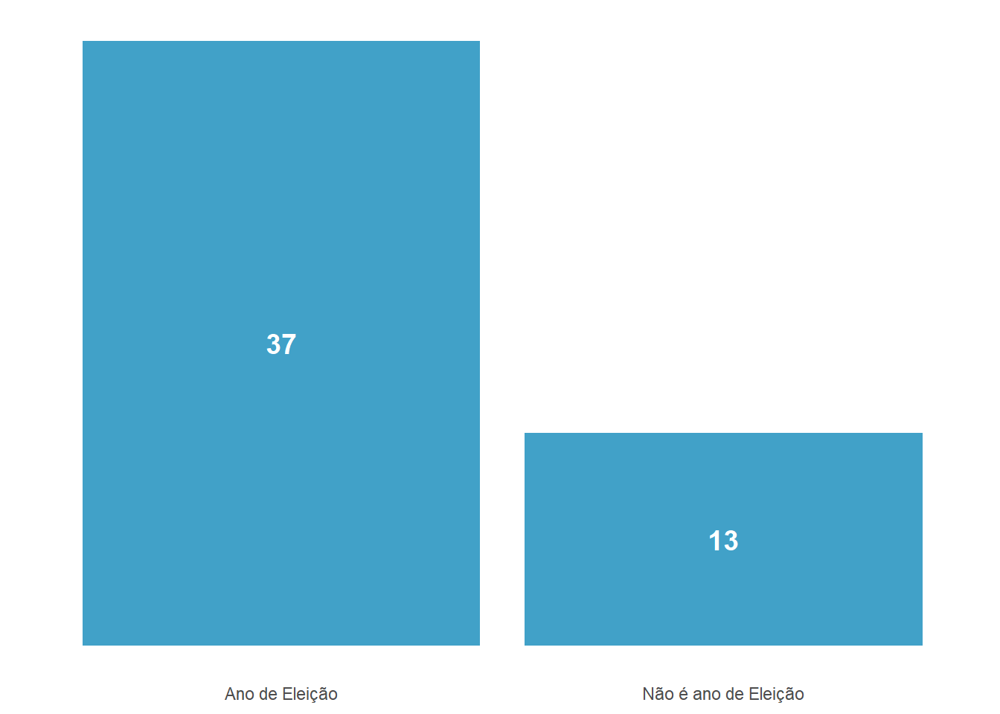

Evolução da Rede de Metrô em SP com um GIF
Introdução
Recentemente deparei-me no twitter com uma publicação que mostrava a evolução da extensão metroviária entre duas cidades. O objetivo da publicação era demonstrar como uma das cidades desenvolveu o dobro de extensão da rede metroviária em um menor intervalo de tempo. Não lembro muito bem quais eram as cidades, mas acredito que uma delas era Seul, a capital da Coreia do Sul.
Junto a isso, relembrei de um post do cientista de dados Sillas Gonzaga em que mapeava a abertura das escolas municipais em SP com um GIF. A junção das duas coisas trouxe-me a ideia: por que não fazer o mesmo com as estações de metrô na cidade de SP ?!
O mapeamento das escolas é uma questão mais pertinente, afinal, será que o governo prioriza a abertura de escolas em áreas com déficit de vagas ou em áreas menos centrais ?
É evidente que no caso do metrô todos conhecem a localização das estações (o próprio nome já indica). Mas não deixa de ser curioso poder visualizar em um GIF a evolução da rede metroviária na cidade de SP.
Portanto, este artigo irá mostrar a evolução da rede metroviária na cidade de SP com um GIF.
Além disso, pretendo responder algumas perguntas! A cada ciclo eleitoral reaparece nos jornais alguma notícia de que o governo inaugurou uma série de estações/projetos em ano eleitoral, ou as vésperas de uma eleição. Segundo reportagem noticiada pelo UOL em 2014, os tucanos inauguram 79% das estações de metrô em ano eleitoral.
Quantas estações foram inauguradas em ano eleitoral no governo PSDB(1994-2022) no estado de São Paulo?
Metodologia
Para mapear a evolução das inaugurações das estações de metrô é necessário ter em mãos não só o ano da inauguração, como também o endereço das estações.
Confesso que não encontrei em dados públicos ambas as informações. A solução utilizada aqui foi raspar as informações no site do Wikipedia. O Wikipedia tem uma página que mostra todas as estações da cidade de São Paulo. Fiz um Scrapper pra coletar o nome dessas estações, o link da página de cada estação, a data de inauguração e o endereço. Não irei explicar nem demonstrar aqui como fazer isso, mas caso queira dar uma olhada basta acessar o meu repositório no Github.
Todo o processo desde a raspagem de dados até a plotagem foi feita utilizando o R e suas dependências.
Disclaimer: somente após terminar este ‘artigo’ que descobri que o CEM (Centro de Estudos da Métropole) disponibiliza dados referentes as estações de metrô/CPTM.
Atenção: o GIF da evolução da rede metroviária de SP segue a ordem de inauguração das estações com base no ano. No entanto, é importante notar que, dentro do mesmo ano, a sequência das estações pode não refletir sua cronologia exata de lançamento ao longo do ano. Portanto, a ordem de aparição das estações no GIF é baseado exclusivamente no ano de inauguração, o que pode não representar a ordem exata de lançamento ao longo desse período, pois não estou considerando dia/mês.
Inaugurações das Estações de metrô em um GIF
Podemos verificar pelo GIF que há regiões na cidade de SP que ainda não possuem cobertura da rede metroviária.
Está em andamento inicial a linha 6 laranja que ligará Brasilância, Zona Norte, com o Centro de São Paulo. Esta linha irá cobrir regiões de Perdizes, Pompeia, Freguesia do Ó… regiões que ainda não possuem cobertura da rede metroviária.
Quantidade de estações de metrô inauguradas por ano
Houve 17 inaugurações de estações somente no ano de 2018. Certamente um ano atípico quando comparado com anos anteriores.
Existe alguma relação entre o ciclo eleitoral e inauguração das estações de metrô ?
Com alguma frequência é noticiado que diversas obras públicas de grande impacto são inauguradas nas vésperas de uma eleição. Entenda por “vésperas” como o período compreendendo até 1 ano antes das eleições. Segundo a Folha de SP, o governo João Dória(PSDB) tem intensificado o ritmo de entregas de obras atrasadas do metrô e da CPTM às vésperas de ano eleitoral. O UOL também noticiou em 2014 que em SP os tucanos inauguram 79% das estações de metrô em ano eleitoral.
Será que durante o governo PSDB em SP(1994-2022) apresenta uma relação expressiva entre inaugurações e ano eleitoral ? Será que o governo PSDB priorizou a inauguração de inúmeras estações em ano eleitoral ? Abaixo um gráfico de barras com a quantidade de estações de metrô inauguradas em ano eleitoral e não ano eleitoral.
Quantidade de estações inauguradas por período eleitoral no governo PSDB(1994-2022)
